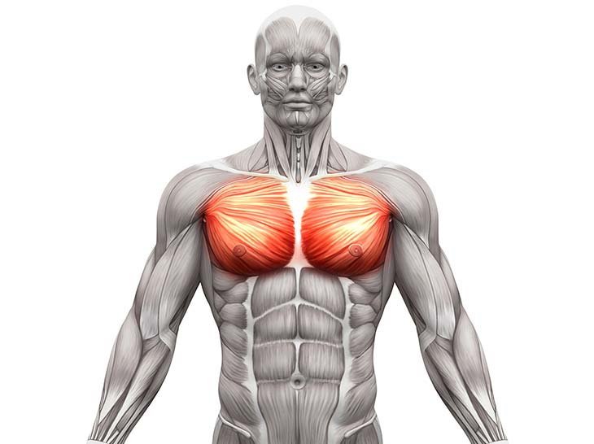
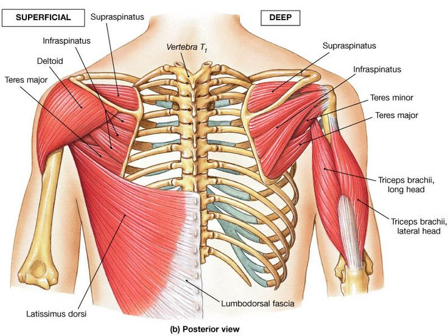
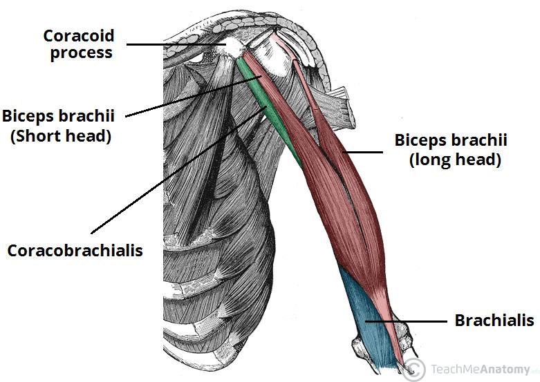
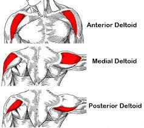
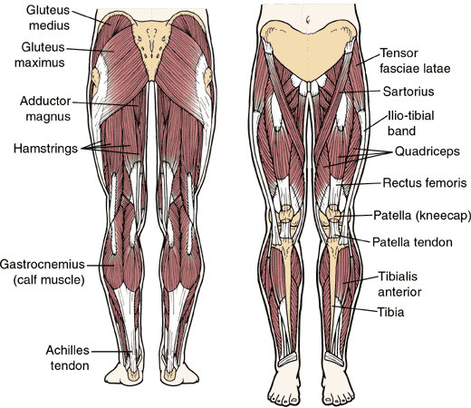

Go back
Muscles
All you want is a program that helps you add muscle to all the right places without forcing you to sit in the gym for a couple of hours every day doing workouts that you hate. Well, I have good news for you: There is no “best” way to combine muscle groups together in your training. So long as you understand a few basic principles, there are many workable ways to combine them into workouts that not only work, but that you enjoy and can stick to. Body-part “bro” splits, push pull legs, and upper/lower routines can all work equally well, and which one you use really depends on how many times per week you want to train, how many years you’ve been training, and what muscle groups you want to work on most. And we’re going to break it all down in this article. By the end, you’re going to know which muscle groups to train together and why, the best exercises for each, and how to create a workout routine that’s guaranteed to deliver results. Let’s get started.
Muscle Groups:
- Chest
- Back
- Arms
- Shoulders
- Legs
Chest
 The main muscle of the chest is the pectoralis major, or “pec” major. Here’s what it looks like: The chest muscle’s main function is to bring the upper arm across the body. Unlike most other muscles, though, the fibers of the chest muscle aren’t all aligned in the same direction. As you can see, the pec major has multiple “heads,” or places where the muscle fibers attach to the skeleton. There’s a sternocostal head, which attaches the sternum and ribcage to your upper arm, and a clavicular head, which attaches your collarbone to your upper arm. Why is this important? Well, how a muscle attaches to the surrounding skeleton changes how you should train it. Certain exercises, like the flat and decline bench press, emphasize the larger sternocostal head of the pecs, and exercises that involve moving the arms up and away from the chest, like the incline and reverse-grip bench press, emphasize the smaller clavicular head.Back
 As you can see, the lats attach your upper arm to your back to form a winglike shape. Your traps connect your spine to your shoulder blades. The spinal erectors run parallel to your spine, and do exactly what you’d expect–keep your spine stabilized and upright. The rhomboids stabilize your shoulder blades by linking them to your spine. Now, here’s the goal in terms of overall back development:- Large, but not overdeveloped, traps that establish the upper back.
- Wide lats that extend low down the torso, creating that pleasing V-taper.
- Bulky rhomboids that create “valleys” when flexed.
- Clear development and separation in the teres muscles and infraspinatus.
- A thick, “Christmas tree” structure in the lower back.
- Many people neglect directly training this muscle group because it isn’t a “mirror muscle.” Developing a wide, thick, defined back, though, is one of the best ways to take your physique from “decent” to “exceptional.”
Arms
 Another muscle you need to know about is the biceps brachialis, which lies beneath the biceps brachii and assists it in flexing at the elbow. While this muscle isn’t nearly as prominent as the biceps brachii, it plays an important role in the overall appearance of your arms. When well developed, the brachialis looks like a “knot” in between the biceps brachii and triceps, and it noticeably impacts the overall appearance of the arms. First, it cleanly separates the biceps and triceps when flexed, which better showcases each. Second, it pushes the biceps brachii up, giving you a better “peak” when flexing. The biceps’ job is to flex the arm, or bring your forearm closer to your upper arm. They also supinate the elbow, which means turning your hand upward as if you were about to catch something. To maximally stimulate the biceps, you typically want to keep your hands turned palm-up toward the ceiling. The triceps, or triceps brachii, do the opposite job of the biceps, pushing your forearm away from your upper arm.Shoulders
 The three heads of the deltoids are the:- Anterior head (front)
- Lateral head (middle)
- Posterior head (rear)
Legs
 The legs are made up of several major muscle groups:- The quadriceps
- The hamstrings
- The glutes
Beginner
Go home
Go top